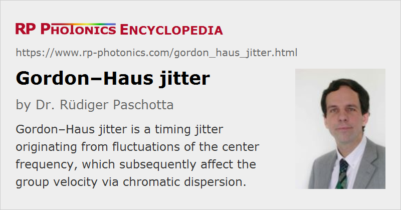

Gordon–Haus Jitter
Definition: a timing jitter originating from fluctuations of the center frequency
More general term: timing jitter
Categories: fluctuations and noise, light pulses
How to cite the article; suggest additional literature
Author: Dr. Rüdiger Paschotta
There are several mechanisms causing timing jitter of ultrashort pulses either during their generation in a mode-locked laser or during propagation in an optical fiber e.g. within an optical fiber communications system. In addition to a direct impact of various effects such as spontaneous emission on the pulse timing, jitter can also arise via coupling of other types of noise to the timing.
One of these coupling mechanisms is the Gordon–Haus effect [1]. Here, fluctuations of the center frequency of the optical pulses are coupled to the timing via group velocity dispersion: a change in center frequency translates into a change in group velocity, which will subsequently affect the pulse timing.
More specifically, Gordon and Haus considered the noise in a fiber-optic link with periodically spaced fiber amplifiers. Here, the amplifiers, which were implicitly assumed to have a wavelength-independent gain, introduce quantum noise which shifts the optical center frequency by a random amount. In many subsequent amplifiers, the center frequency (and with it the group velocity) of each pulse undergoes a random walk, without any correlation between the center frequency changes of different pulses. Subsequently, the timing deviations of the pulses accumulate more and more. A central result is that the variance of the timing errors grows in proportion to the fiber losses per unit length, the third power of the transmission distance, and inversely to the square root of the optical energy per pulse. The whole analysis was actually based on the assumption of soliton pulse propagation, with reference to soliton perturbation theory; however, the basic results can be generalized for non-solitonic pulses.
Note that Gordon–Haus jitter in the originally considered situation becomes the dominant source of jitter for long-haul data transmission. This is due to the third-power dependence on length, which results from the unbounded drift of the center frequency. However, Gordon–Haus jitter can be effectively suppressed by using regularly spaced optical filters, or simply amplifiers with limited gain bandwidth, in order to eliminate this unbounded drift. The jitter performance may then be limited by other kinds of noise.
The term Gordon–Haus effect is often used in a more general way – essentially always when center frequency fluctuations couple to the timing via chromatic dispersion.
Gordon–Haus Jitter in Mode-locked Lasers
A coupling from center frequency fluctuations to the timing occurs also in every mode-locked laser – not only in mode-locked fiber lasers. Here, the center frequency can never undergo an unbounded drift, because the gain bandwidth of the gain medium is limited. Nevertheless, the effect on the timing can be significant [2, 6] – particularly at low noise frequencies and for short pulses (because the latter are less affected by the direct impact of spontaneous emission). Its strength depends on the chromatic dispersion and the gain bandwidth, and the statistics are different from those for unbounded drifts of the center frequency.
Questions and Comments from Users
Here you can submit questions and comments. As far as they get accepted by the author, they will appear above this paragraph together with the author’s answer. The author will decide on acceptance based on certain criteria. Essentially, the issue must be of sufficiently broad interest.
Please do not enter personal data here; we would otherwise delete it soon. (See also our privacy declaration.) If you wish to receive personal feedback or consultancy from the author, please contact him e.g. via e-mail.
By submitting the information, you give your consent to the potential publication of your inputs on our website according to our rules. (If you later retract your consent, we will delete those inputs.) As your inputs are first reviewed by the author, they may be published with some delay.
Bibliography
| [1] | J. P. Gordon and H. A. Haus, “Random walk of coherently amplified solitons in optical fiber transmission”, Opt. Lett. 11 (10), 665 (1986), doi:10.1364/OL.11.000665 |
| [2] | H. A. Haus and A. Mecozzi, “Noise of mode-locked lasers”, IEEE J. Quantum Electron. 29 (3), 983 (1993), doi:10.1109/3.206583 |
| [3] | S. Kumar and F. Lederer, “Gordon–Haus effect in dispersion-managed soliton systems”, Opt. Lett. 22 (24), 1870 (1997), doi:10.1364/OL.22.001870 |
| [4] | T. Okamawari et al., “Analysis of Gordon–Haus jitter in a dispersion-compensated optical transmission system”, Opt. Lett. 23 (9), 694 (1998), doi:10.1364/OL.23.000694 |
| [5] | C. J. McKinstrie, “Effects of filtering on Gordon–Haus timing jitter in dispersion-managed systems”, J. Opt. Soc. Am. B 19 (6), 1275 (2002), doi:10.1364/JOSAB.19.001275 |
| [6] | R. Paschotta, “Noise of mode-locked lasers. Part II: timing jitter and other fluctuations”, Appl. Phys. B 79, 163 (2004), doi:10.1007/s00340-004-1548-9 |
See also: timing jitter, solitons, optical fiber communications, pulse propagation modeling
and other articles in the categories fluctuations and noise, light pulses
|  |
If you like this page, please share the link with your friends and colleagues, e.g. via social media:
These sharing buttons are implemented in a privacy-friendly way!